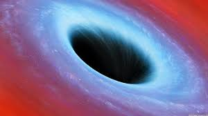
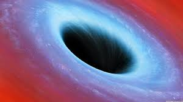
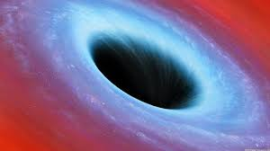

IMAGES
.jpg)
.jpg)

.jpg)
.jpg)
.jpg) 

.jpg)
Many of you were wondering what is blackhole and many other questions must be raising in your mind,same my frined "Vir" was wonderingwhat is it so we both went to a astronomer and asked many questions,collected much information about blackhole so let's see what i have collected
The simplest definition of a black hole is an object that is so dense that not even light can escape its surface. ... If we squished the Earth's mass into a sphere with a radius of 9 mm, the escape velocity would be the speed of light. Just a wee-bit smaller, and the escape velocity is greater than the speed of light
Albert Einstein first predicted the existence of black holes in 1916, with his general theory of relativity. The term "black hole" was coined many years later in 1967 by American astronomer John Wheeler.
A black hole is a region of spacetime where gravity is so strong that nothing—no particles or even electromagnetic radiation such as light—can escape from it. The theory of general relativity predicts that a sufficiently compact mass can deform spacetime to form a black hole.
A black hole can be formed by the death of a massive star. When such a star has exhausted the internal thermonuclear fuels in its core at the end of its life, the core becomes unstable and gravitationally collapses inward upon itself, and the star's outer layers are blown away.
There are four types of black holes: stellar, intermediate, supermassive, and miniature. The most commonly known way a black hole forms is by stellar death.
Even light, the fastest-moving thing in our universe, cannot escape – hence the term “black hole.” The radial size of the event horizon depends on the mass of the respective black hole and is key for a person to survive falling into one. ... A person falling into a supermassive black hole would likely survive.
A black hole is a tremendous amount of matter crammed into a very small — in fact, zero — amount of space. The result is a powerful gravitational pull, from which not even light can escape — and, therefore, we have no information or insight as to what life is like inside.
A black hole is an astronomical object with a gravitational pull so strong that nothing, not even light, can escape it. A black hole's “surface,” called its event horizon, defines the boundary where the velocity needed to escape exceeds the speed of light, which is the speed limit of the cosmos.
two neutron stars can collide, creating an event horizon and leading to a black hole, and a dense collection of matter, either in the form of gas or a star, can directly collapse, leading to a black hole.
Yes, It's Possible to Safely Jump Into a Black Hole. But if you're going to try it, you need to know this one small catch. Scientists say humans could indeed enter a black hole to study it. Of course, the human in question couldn't report their findings—or ever come back.
No. Stars like the Sun just aren't massive enough to become black holes. Instead, in several billion years, the Sun will cast off its outer layers, and its core will form a white dwarf - a dense ball of carbon and oxygen that no longer produces nuclear energy, but that shines because it is very hot.
Scientists have therefore started creating artificial black holes inside labs to study their properties. And one such experiment, carried out by scientists at the Technion- Israel Institute of Technology, has proved that Stephen Hawking had been right about black holes all along.
If the events of 2020 were not enough to frustrate most of us, recent data shows that Earth may be closer to a supermassive black hole than thought. Not only is our planet closer to the black hole, but the new data also shows that Earth is orbiting the Galactic Center of the Milky Way 141 miles per second faster.
By their calculations, quantum mechanics could feasibly turn the event horizon into a giant wall of fire and anything coming into contact would burn in an instant. In that sense, black holes lead nowhere because nothing could ever get inside. This, however, violates Einstein's general theory of relativity.
'The Unicorn' lies a mere 1,500 light-years from us and is just three times more massive than the sun. Astronomers have apparently found the closest known black hole to Earth, a weirdly tiny object dubbed "The Unicorn" that lurks just 1,500 light-years from us. The nickname has a double meaning.
Don't worry: Despite its proximity to Earth, the black hole is no danger to us. ... Astronomers estimate there are hundreds of millions of black holes in our galaxy. The latest discovery gives them hope that there are others lurking around nearby stars, perhaps even some of the most familiar points of light in our sky.
Astronomers are confident that the Milky Way galaxy has a supermassive black hole at its center, 26,000 light-years from the Solar System, in a region called Sagittarius A* because: ... No known astronomical object other than a black hole can contain 4.1 million M ☉ in this volume of space.
Using NASA's Chandra X-ray Observatory, astronomers have seen that the famous giant black hole in Messier 87 is propelling particles at speeds greater than 99% of the speed of light. ... When matter gets close enough to a black hole, it enters into a swirling pattern called an accretion disk.
Dark matter may not give off any light or radiation, but we might be able to watch it smash into atoms here on Earth. Dark matter makes up 85% of all matter in the Universe, but astronomers have never seen it. The nature of this mysterious — something — remains largely unknown.
Scientists call it 'the Unicorn. ' Astronomers have discovered one of the smallest black holes to date, sitting just 1,500 light-years away which also makes it the closest one to Earth found so far. And they have called it "the Unicorn."
The most common type of medium-sized black holes is called "stellar." The mass of a stellar black hole can be up to 20 times greater than the mass of the sun and can fit inside a ball with a diameter of about 10 miles. Dozens of stellar mass black holes may exist within the Milky Way galaxy
As you get closer to a black hole, the flow of time slows down, compared to flow of time far from the hole. (According to Einstein's theory, any massive body, including the Earth, produces this effect. ... Near a black hole, the slowing of time is extreme.
Cygnus X-1 is the heaviest stellar black hole observed without using gravitational waves. The famed Cygnus X-1 black hole (illustrated, slurping mass off its companion star) is nearly 1.5 times as massive as astronomers thought, new observations suggest.
Presumably, Gargantua is in or near to the center of the galaxy for which it resides. Due to the presence of large amounts of neutron stars and IMBHs (intermediate mass black holes) it could possibly be the super-massive black hole of the home galaxy.
In 1939 he published a paper that argues that a star collapsing would spin faster and faster, spinning at the speed of light with infinite energy well before the point where it is about to collapse into a Schwarzchild singularity, or black hole.
